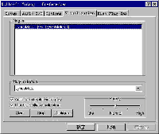
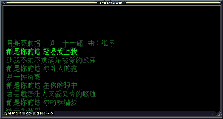
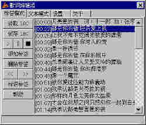

|
|
| 当前位置：电脑报电子版 > 1999 年 > 39 期 > 软件世界 > 大家一起来ＯＫ |
| 《 大家一起来ＯＫ 》 |
| 想没想过让你的Winamp也具备卡拉OK功能呢？汪箴制作的Winamp歌词伴侣——Lyrismate就能让你实现这个梦想。这个小软件可以让你在欣赏MP3歌曲的时候，同时查看歌词，而且还会像卡拉OK一样只高亮当前正在演唱的部分！该软件
6.40版本之后就开始免费发布了，而且改成了Winamp插件形式，因此安装就更简单了，你只需把动态链接库文件“Vis_Lyricsmate.dll”拷贝到Winamp目录下的Plugins文件夹内就可以了。制作步骤如下： 1．启动Winamp，然后按下″Ctrl＋k″打开插件设置窗口，选中LyricsMate，最后按下″Start″键，如图1。 如果你嫌每次启动都要这样设置一下太麻烦，可以选中“Auto execute plug－in on play”复选框，让它随着Winamp播放自动运行。 软件的运行窗口如图2， 2．用鼠标右键在窗口空白处，任意点击或用鼠标左键点击左上角的小图标，都可以调出主菜单。第一次运行时要为当前播放歌曲指定歌词，以后就可以自动查找了（歌词的制作步骤见第3步）。歌曲播放时，歌词就会随着歌曲的演唱进度自动向上滚动。点击“首选项”命令，就可以在弹出的窗口中调整字体大小、字型、行间距、文本位置、显示颜色等。由于歌曲的版本不同（例如由不同唱片公司发行），歌曲和歌词的显示速度可能并不协调。针对这种情况，软件提供了调整歌词显示速度的功能，用鼠标每按下窗口左下角的“＋”或“－”号，就可以加快半秒或减慢半秒歌词的显示速度。 3．如何制作歌词呢？该软件采用“LRC v0.3”作为歌词格式，简单来说就是在纯文本制作的歌词中加上时间标签，如“[mm:ss]”（分钟数:秒数），实际播放的时候这些标签都不显示。 你可以用制作软件“LyricsMate LRC Editor”建立歌词文件。首先也需运行Winamp，然后打开这个LRC歌词编辑器，如图3。 选中“标签模式”，再点击“读取LRC”，选择一个写有歌词的纯文本文件。用鼠标选中歌词的第一句，然后按下“>”键播放歌曲（你也可以直接在Winamp中播放），当将要唱到已经选中的歌词时，点击“添加标签”按钮，该行歌词的前面就会自动出现一个时间标记，依次类推直到最后一句。有些歌手喜欢把一段歌翻来覆去的唱上好几遍，此时你只需在这段歌词的前面加上不同的时间标签就可以了。你还可以为某首歌添加一些必要的注释，如歌曲名称、演唱者、出自哪张专辑等，甚至可以自豪地写上你的大名。 事实上，你大可不必如此辛苦，因为作者和热心的网友们已经制作了大量的歌词，并且数量还在不断增加中，你可以直接到http:／／www.lotof.com／lyrics（好多歌词）网站下载。上面说的两款软件也可以在这里找到，其中歌词伴侣的最新版本是6.42，歌词编辑器的版本是1.15。 (北京 廖百智) |
| 下载本期推荐软件 | 页 首 |
| 《电脑报》版权所有，电脑报网站编辑部设计制作发布 |